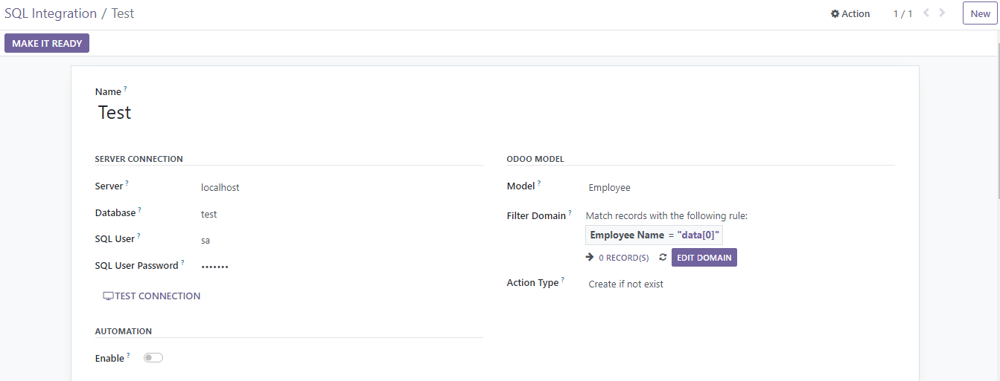
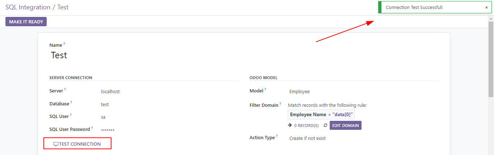
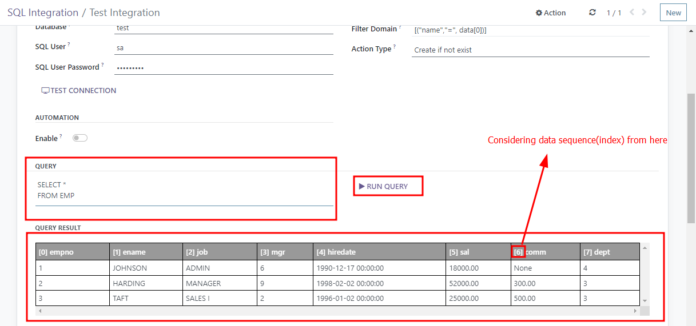
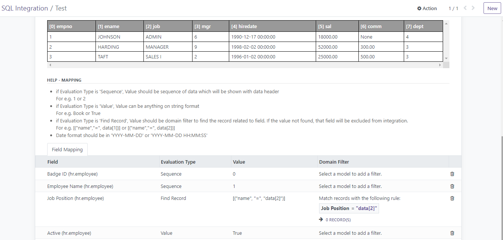
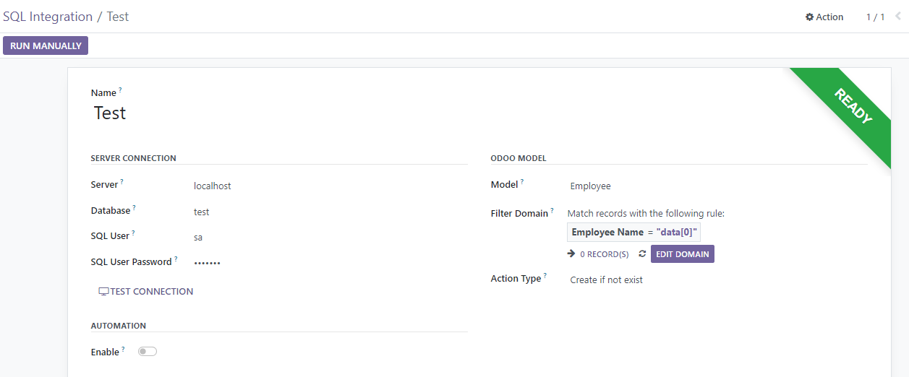
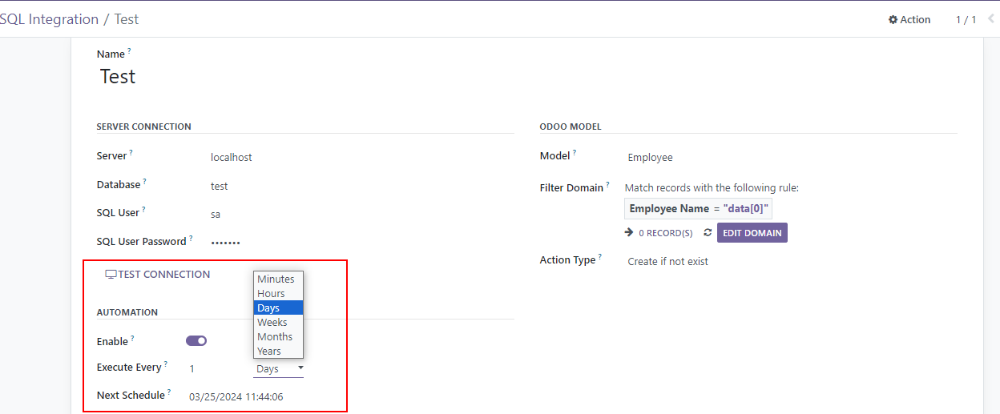
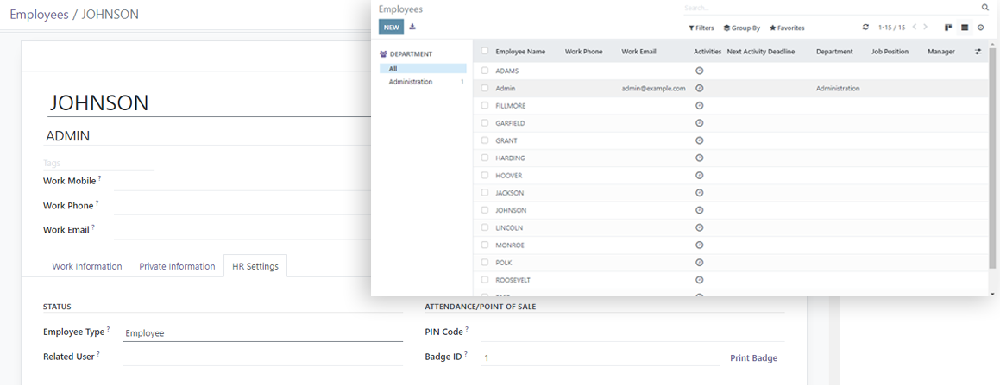

This module help to integrate data from MS SQL to odoo
- 17.0.1.0.3 / 16-April-24 : Binary fields can be
integrated
- 17.0.1.0.2 / 25-March-24 : Enhancement
- 17.0.1.0.1 / 27-March-23 : First Release
-
 Odoo Enterprise On-premise
Odoo Enterprise On-premise
-
 Odoo Community
Odoo Community
- Integrating data from MSSQL to the Odoo
- Including the capability to schedule regular data transfers and
specify which data sets to transfer.
- Integration Types:
- Create: Create record forcefully
- Create if not exist: Create a record if it does not
exist in Odoo
- Update: Update a record
- Update & Create if not exist: Update the record
if it already exists in Odoo, otherwise create a new record.
- Settings –> SQL Integration
- Provide credentials to connect with SQL
- Select the model which you want to update
- Provide domain filter to get unique value from data (for update
record)
- Select Action type (mentioned in features)

- Press the “TEST CONNECTION” button to verify the connection to the
SQL.

- Provide the SQL query and execute it (Run Query) to obtain sample
data as shown below

- Map the fields that need to be integrated from the data. Here are
some mapping tips to help you with the process

- To make everything ready for the integration process, press the
‘MAKE IT READY’ button
- Once everything is ready, a green badge will appear as shown in the
image below. Then, press ‘RUN MANUALLY’ to manually run the
integration

- If auto integration is required, you can enable it

- Process is completed

Python libraries required:
Extra dependencies required:
Bugs are reporting to me directly through email. In case of trouble, help
me smashing it by providing a detailed and welcomed
This module is maintained by fasilwdr@hotmail.com.
!
Email: fasilwdr@hotmail.com
WhatsApp: https://wa.me/966538952934
Facebook: https://www.facebook.com/fasilwdr
Instagram: https://www.instagram.com/fasilwdr
Need help with the configuration or want this module to have more
functionalities? Please contact me.